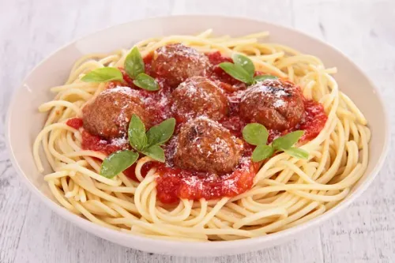
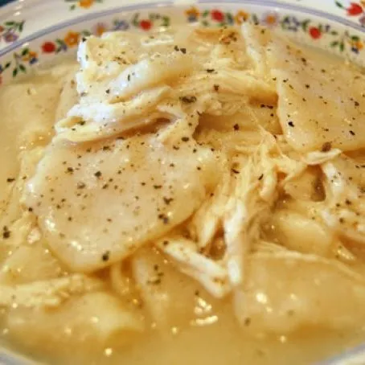
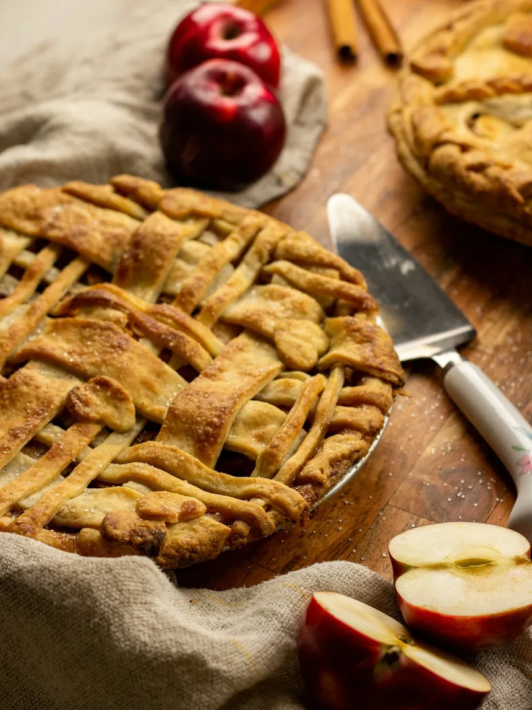

Spaghetti and Meatballs
Ingredients:
- Spaghetti
- Meatballs
- Tomato sauce
- Grated Parmesan cheese
Instructions:
- Cook spaghetti according to package instructions.
- Heat tomato sauce in a separate pan.
- Add cooked meatballs to the sauce and simmer for 10 minutes.
- Serve meatballs and sauce over cooked spaghetti, garnished with grated Parmesan cheese.
Chicken and Dumplings
Ingredients:
- Chicken
- Flour
- Chicken broth
- Milk
Instructions:
- Cook chicken in a pot until fully cooked.
- Mix flour with chicken broth and milk to form a dough.
- Drop spoonfuls of dough into the simmering chicken broth.
- Cook until the dumplings are cooked through.
Apple Pie
Ingredients:
- Apples
- Pastry dough
- Sugar
- Cinnamon
Instructions:
- Peel, core, and slice apples.
- Line a pie dish with pastry dough.
- Fill the pie with sliced apples mixed with sugar and cinnamon.
- Cover with another layer of pastry dough and bake until golden brown.